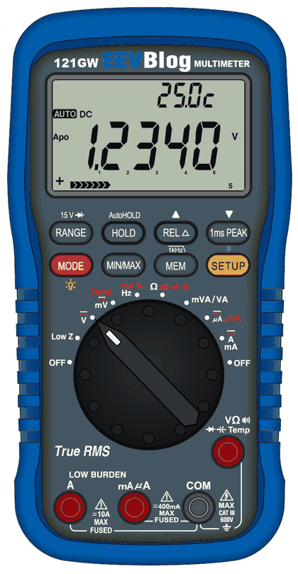
A multimeter is connected to things that can hurt you. Read this chapter before you use the meter.
The dial switches the meter on and chooses what you measure. Both ends of the dial are OFF. From left to right:
| Dial position | What it measures | Press MODE to switch to |
|---|---|---|
| Low Z | Voltage with a low-impedance input (stops "ghost" voltages) | - |
| V | Voltage | DC → AC → AC+DC |
| mV / Temp | Small voltages, temperature | DC mV → AC mV → temperature |
| Hz ms % | Frequency, pulse width, duty cycle | Hz → ms → % |
| Ω | Resistance, continuity, diode, capacitance | Ω → continuity → diode → capacitance |
| mVA / VA | Power (voltage × current) | between the two power modes; the socket you use picks mVA or VA |
| µA / µVA | Small currents and power | DC µA → AC µA → two µVA power modes |
| A / mA | Currents | AC ↔ DC |
Each dial position remembers the mode you chose with MODE, also after switching off.
Every key does one thing when you press it briefly and often another when you hold it for half a second (this manual writes MODE for "hold MODE"). A short beep means "done", two short beeps mean "not possible now".
| Key | Press | Hold |
|---|---|---|
| MODE | Next measuring mode of the dial position | Backlight on/off |
| RANGE | Manual range; each press: next range. In diode mode: 3 V / 15 V | Back to automatic range |
| HOLD | Hold the reading, then auto-hold, then off | - |
| REL | Relative reading on/off (zero the display) | AC: 1 kHz filter on/off. Current: store a zero offset |
| PEAK | AC: 1 ms peak capture on/off | Bluetooth on/off |
| MIN/MAX | Start recording minimum/maximum, then step MAX → MIN → AVG → all | Leave MIN/MAX |
| MEM | Look at the last stored readings | Start/stop logging to the SD card |
| SETUP | Next page of the SETUP menu (small display) | Change the page shown (it blinks); hold again to save |
The large display shows the reading. The small display above it shows a page of the SETUP menu: the temperature inside the meter, the battery, the date and time, or extra information for the mode you use (for example the frequency of an AC voltage). The bar graph under the reading follows quick changes. Symbols show what is active: AUTO (automatic range), HOLD, REL, PEAK, MIN MAX AVG, MEM, BT (Bluetooth), 1kHz, Apo (auto power-off), the battery and the lightning symbol for high voltage.
The meter uses four AA batteries (1.5 V alkaline). The battery symbol shows when they get low (below about 4.1 V); replace them then. Lithium AA cells start at a higher voltage than alkaline cells. Remove the batteries if you will not use the meter for more than about 50 days. A small CR1220 battery inside keeps the clock running.
Turn the dial from OFF to a function. The small display shows the firmware version for a moment, then the meter measures.
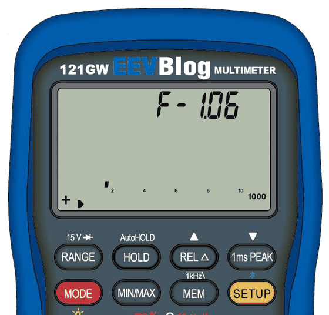
The meter switches itself off after 30 minutes without a key press (auto power-off). One minute before, it beeps five times; press any key to keep it on. You can turn auto power-off off in the SETUP menu (page APOoF).
For every measurement: choose the function with the dial, the mode with MODE, then connect the leads.
V measures up to 600 V. MODE switches DC, AC and AC+DC. In AC the small display can show the frequency of the signal and its level in dBm (see the SETUP menu). mV is for small voltages up to 500 mV. Low Z loads the circuit a little, so voltages picked up from nearby wires ("ghost voltages") disappear; it chooses AC or DC by itself and shows dashes while it decides. Do not use Low Z below about 12 V.
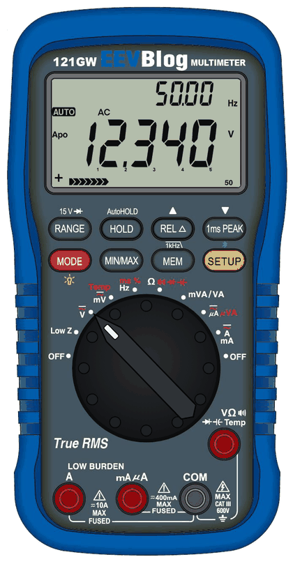
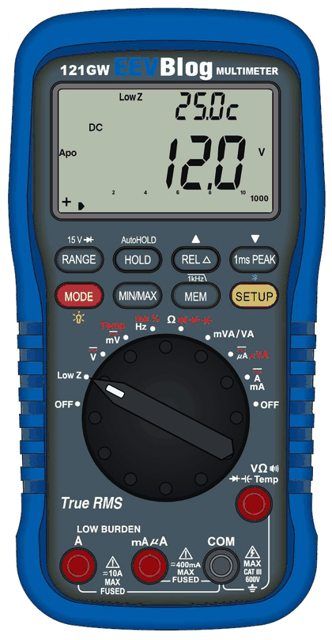
Dial to mV / Temp, press MODE twice and connect the thermocouple. The meter is set for a K-type thermocouple; for J, T, N, R or S types choose the type in SETUP (page tc). °C or °F is chosen on the first SETUP page.
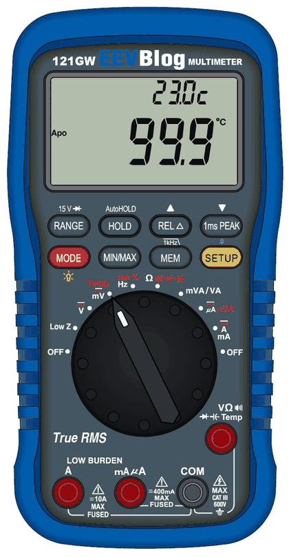
Dial to Hz ms %. MODE steps through frequency (Hz), pulse width (ms) and duty cycle (%).
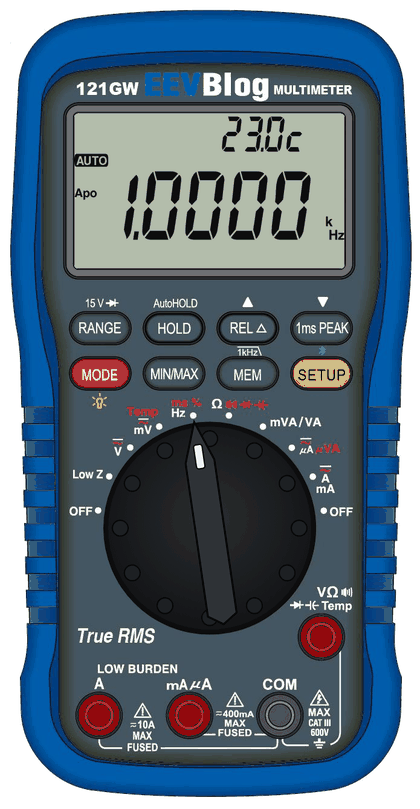
Dial to Ω. MODE steps through:
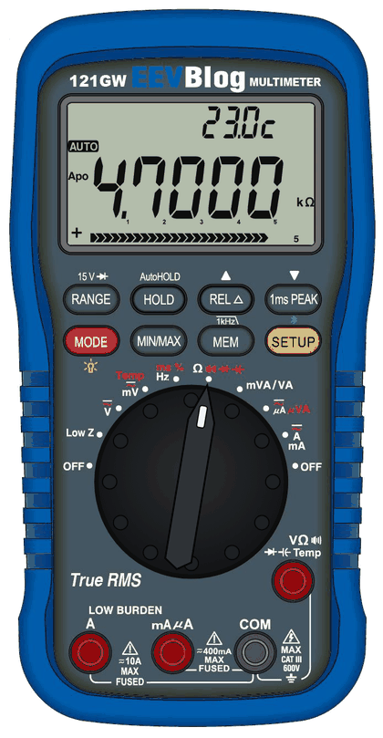
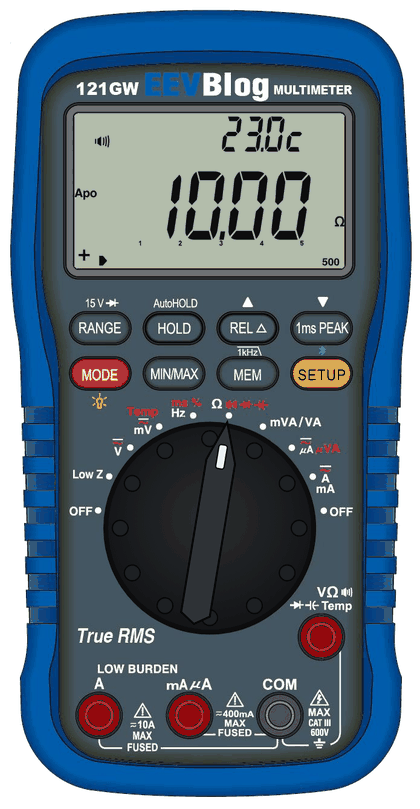
Move the red lead to the right socket first: µA/mA for small currents, A for up to 10 A. On the A / mA position the meter sees which socket you use and shows mA or A by itself. MODE switches AC and DC.
Burden voltage: in the current and power modes the small display has a page bdOFF. Turn it on (bdOn) to see the voltage the meter itself drops. For that, connect a lead from the current socket in use to the V Ω socket.
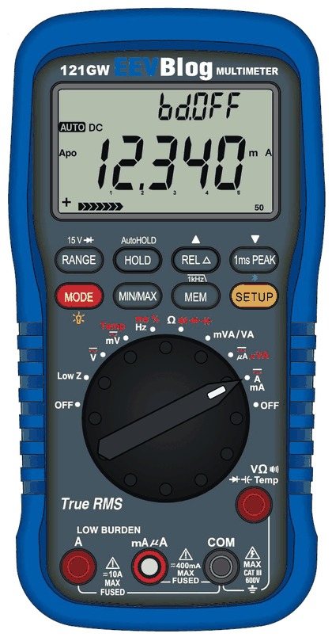
The power positions measure voltage and current at the same time and show their product (VA). Connect the circuit so that the COM socket is common to both the voltage and the current measurement. MODE switches between the two power modes of the position. After a change the display shows dashes until the first result.
Normally the meter picks the range (AUTO). Press RANGE to keep the present range; each further press steps to the next range. Hold RANGE to go back to automatic. When the input is too large for the range, the display shows OFL.
Press HOLD once: the reading freezes (HOLD). Press again: auto-hold (A-HOLD) waits until the reading is stable, keeps it with a beep and updates when you measure something new. It ignores readings near zero, so it waits while the probes are in the air. Press again: off. In Hz/ms/%, capacitance and during MIN/MAX the second press switches HOLD off (no auto-hold). HOLD does not work while logging.
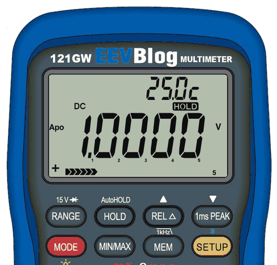
Press REL: the present reading becomes the zero point and the meter shows the difference. Press again to switch off. With SETUP page rEL-P the difference is shown in percent instead, handy for checking parts against a reference.
Press MIN/MAX to start recording. Each further press shows the maximum, the minimum, the average, and all three symbols. Hold MIN/MAX to stop. While MIN/MAX runs, the SETUP menu has four extra pages: n (number of readings), Sd (standard deviation, shown on the large display), tHI and tLo (the time of the maximum and the minimum).

In AC volts and AC mV, PEAK captures fast peaks (1 ms). Press again to switch off.
In AC volts and AC mV, hold REL to switch a 1 kHz low-pass filter on or off (1kHz symbol). It reduces high-frequency noise on the reading.
Hold MODE to switch the light on or off. The meter remembers your choice. On SETUP page bL you can let the light switch off by itself after 30 seconds or 1 to 99 minutes; any key or dial turn switches it on again (that first key press only wakes the light).
In a current mode on its lowest range, hold REL with nothing connected to store the present small reading as a zero offset. It is kept also after switching off. Each time you do this the new offset is added to the old one, and there is no key to clear it, so use it only when the meter really shows a small current with nothing connected.
The SETUP menu lives on the small display. You can use it while you measure, but not during logging or while you look at stored readings.
Saved settings stay after switching off. If you leave a page blinking for about two minutes, the change is undone. Some pages only appear in certain modes (they are marked below).


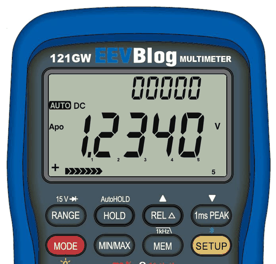
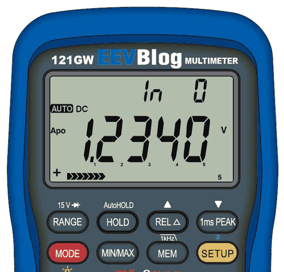
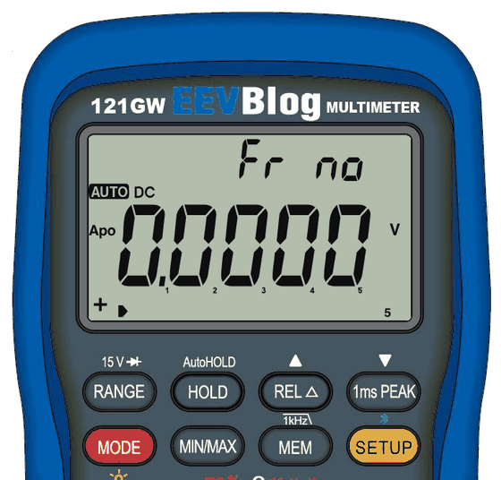
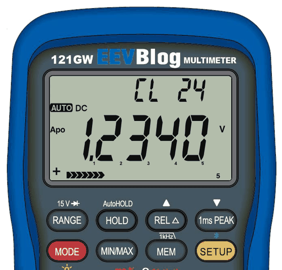

| Page | Mode | What it does |
|---|---|---|
| Frequency, then dBm | AC volts | Two pages: the frequency of the signal, then its level in dBm. Hold SETUP on the dBm page to choose the reference (r 600, 50 Ω, 75 Ω or dBV). |
| tc-K | Temperature | Thermocouple type K, J, T, N, R or S. |
| DN 30 | Continuity | Beep threshold 1–300 Ω; DN = beep below, UP = beep above. |
| bH100 | Continuity | How long the beep holds after a short contact: 100, 50 or 25 ms, or bHOFF = shortest (about 15 ms). |
| 3 / 15 | Diode | The test voltage (change it with RANGE). |
| LPOFF, L4-20, L0-20 | DC mA | Show the current as a loop percentage: 4 mA = 0 %, 20 mA = 100 % (or 0–20 mA). |
| PtOFF, Pt100, P1000 | Resistance | Show a PT100 or PT1000 sensor as a temperature. For best accuracy short the leads, press REL, then connect the sensor. |
| bdOFF / bdOn | Current and power | Show the burden voltage. |
| n, Sd, tHI, tLo | While MIN/MAX runs | Number of readings, standard deviation, time of the maximum and the minimum. |
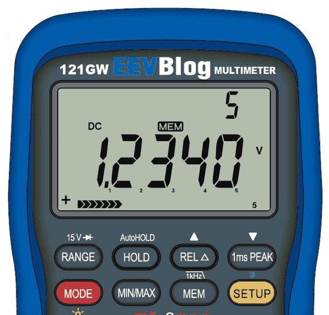
While logging, most keys are locked so nothing changes by accident; only backlight and Bluetooth still work. Auto power-off waits until logging stops. With low batteries logging does not start (LoBAt).
Each session is a file named after the date, for example 26110500.CSV (2026-11-05, file 00). It is a plain text table that opens in any spreadsheet: date, time, function, value and unit per line, and the maximum and minimum with their times at the end.
Press MEM to see the last readings (up to 60). REL = next, PEAK = previous, MEM = back. The view closes by itself after about 10 seconds. If nothing has been logged yet, MEM gives two short beeps.
Any normal micro SD card works. Cards up to 32 GB usually come formatted as FAT32, larger ones as exFAT; the meter uses both.
Only with the two-part bootloader. Everything on the card is erased.
Hold PEAK to switch Bluetooth on (BT symbol); hold it again to switch off. The meter keeps measuring and sends its readings. Only one device can connect at a time: close the phone app before you use the computer app.
The 121GW Companion is an app for Windows, macOS and Linux (see the project's releases; free for individuals, schools and non-profits, companies need written permission). It shows the meter live with a graph, records to your computer, sets the meter's clock, updates the firmware and the bootloader, and can show readings as percent, PT100 temperature or pass/fail. With the meter on SETUP page Ld-bt it can also:
Readings pause while Ld-bt is shown. A download runs at about 1 KB per second.
Your meter's calibration, serial number and settings are stored inside the meter. Make a backup on the SD card, so you can restore them if something ever goes wrong.
If you wait too long, the meter simply starts normally; switch off and try again. -Err- means the backup did not work (no card, card problem).
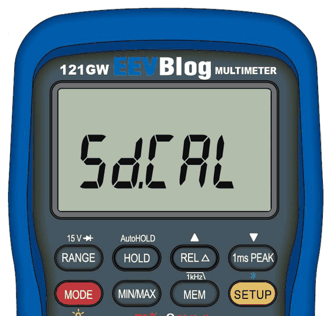
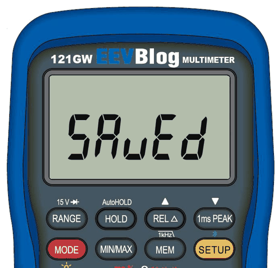
The card now holds cal.bin. Copy it to your computer and keep it safe.
Same as above, but press PEAK instead of REL (SdSEt), then MODE, each within 5 seconds. The meter only accepts the backup of its own serial number; another meter's file shows -Err- and nothing is changed.
Log files start with an ID made of a four-digit date code and the five-digit serial number. The serial number is a page of the SETUP menu. The date code can only be stored when you hold SETUP while switching on: the year and month pages then also store it. Those pages also set the clock, so set the clock again afterwards. Normally you never need this.
| Hold or press while switching on | What happens |
|---|---|
| MEM | Backup / restore menu (SdCAL), see above |
| MEM + HOLD | Firmware update from the card (bootloader) |
| SETUP | The year and month pages also store the date code |
| RANGE | All display segments on (display test) |
| MODE | CAL1 appears. Do not press REL then; switch off. REL would start calibration mode. |
Your calibration, serial number and settings are kept through every firmware update. Make a backup (cal.bin) first anyway, and use fresh batteries.
Which bootloader do you have? If your SETUP menu has the page Fr no after Ld-bt, your meter has the two-part bootloader. Otherwise it has EEVblog's original one.
When an update is available, the app offers it. Click Update: the meter restarts, shows -IAP- and the progress, then Ld oK, and restarts into the new firmware. Nothing to press on the meter.
You can also send the firmware file to the card over Bluetooth: Bluetooth on (hold PEAK), SETUP page Ld-bt, then send it with the companion app. The meter shows Ld and the percent, then Ld oK: the file is now on the card. With EEVblog's bootloader you then do the update from the card (steps 3 to 5 above); with the two-part bootloader the app does that for you.
The two-part bootloader is an optional replacement for EEVblog's bootloader (the small program that installs firmware). With it, updates go over Bluetooth without a card or keys, cards may be exFAT, and an interrupted update is simply repeated. It never touches the calibration. The companion app installs it once; you need fresh batteries for that. Details: the bootloader guide on the project page.
Your calibration, serial number and settings are kept through every firmware update.
| Display | Meaning | What to do |
|---|---|---|
| OFL | Input too large for the range (or outside the sensor range) | Choose a higher range or reduce the input |
| LEAd + beeping | A lead is in a current socket while the dial is on another function | Move the lead to V Ω, or turn the dial to the current function |
| ----- | No value yet (power after a change, percent without reference, statistics with too few readings) | Wait or measure |
| -oFF- | Auto power-off is switching the meter off | To use the meter again, press a key (release it and press again) |
| LoBAt | Batteries too low for logging | Replace the batteries |
| SdEnd | The log file is full | Start a new log |
| SdE01 … | SD card problem while logging (no card, cannot write) | Check the card, its free space and that it sits correctly |
| SdCAL, SdSAv, SdSEt | Backup menu at power-on | See "Backup of the calibration" |
| SAvEd | Backup or restore done | Switch off |
| -Err- | Backup or restore failed (no card, wrong file, another meter's file) | Check the card and the file |
| Ld nn, Ld oK | Bluetooth transfer running / finished | - |
| LdE 1 … LdE 6 | Transfer failed (card error or damaged file) | Send again |
| LdE 7 | The bootloader cannot be installed on this meter | Nothing was changed |
| LdE 8 | Batteries too low to install the bootloader | Fresh batteries |
| LdE 9 | Installing the bootloader failed | Send it again |
| Fr oK, FrE n, FrE L | Format done / failed / not possible while logging | Try another card / stop logging |
| -IAP- | Update mode of the two-part bootloader | Send the firmware with the app, or use a card |
| douun, Good, FAIL | Card update by the two-part bootloader: running / done / file refused (nothing changed) | For FAIL: check the file EEVBlog.bin |
| CAL1 | MODE was pressed while switching on | Switch off. Do not press REL |
| CAL | Calibration mode (you pressed MODE then REL at power-on) | Switch off and on. Do not use it unless you have calibration equipment |
| Problem | Solution |
|---|---|
| The meter does not react to a key | Two short beeps mean "not possible now", for example during logging. Stop logging first. |
| SdCAL does not appear, or MODE does nothing after SdSAv | Hold MEM while switching on, then press the next keys within 5 seconds each. |
| Bluetooth does not connect | Hold PEAK until BT shows. Close the phone app; only one device can connect. |
| The reading jumps between ranges | Press RANGE to keep one range. |
| The display looks faint or shows ghost segments | Change the contrast on SETUP page Lcd. |
| The light goes off by itself | SETUP page bL: set bLOFF. |
| The meter switches off | Auto power-off: SETUP page APOoF. |
| A card update with EEVblog's bootloader does nothing | The card must be FAT32 and the file named EEVBlog.bin in the top folder. |
| After an interrupted update the meter shows -IAP- | Send the firmware again with the app or use a card; the meter stays in update mode until it has a good firmware. |
| Function | Ranges |
|---|---|
| DC and AC volts | 5 V, 50 V, 500 V, 600 V |
| DC and AC millivolts | 50 mV, 500 mV |
| Low Z | 600 V |
| Resistance | 50 Ω, 500 Ω, 5 kΩ, 50 kΩ, 500 kΩ, 5 MΩ, 50 MΩ |
| Continuity | 500 Ω, beep threshold 1–300 Ω |
| Diode | 3 V or 15 V test voltage |
| Capacitance | 10 nF, 100 nF, 1 µF, 10 µF, 100 µF, 10 000 µF |
| Frequency | 99.999 Hz to 999.99 kHz |
| Pulse width | 10 ms, 100 ms, 1000 ms |
| Duty cycle | to 99.0 % |
| DC and AC µA | 50 µA, 500 µA |
| DC and AC mA | 5 mA, 50 mA |
| DC and AC A | 500 mA, 5 A, 10 A |
| Temperature (K) | −200 to 1350 °C; other thermocouple types have their own limits |
| Power | 250 µVA to 500 VA |
For the accuracy of each range see the specifications in EEVblog's original 121GW manual; the firmware does not change the meter's hardware.